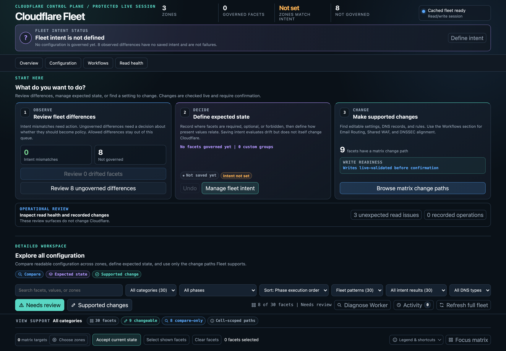
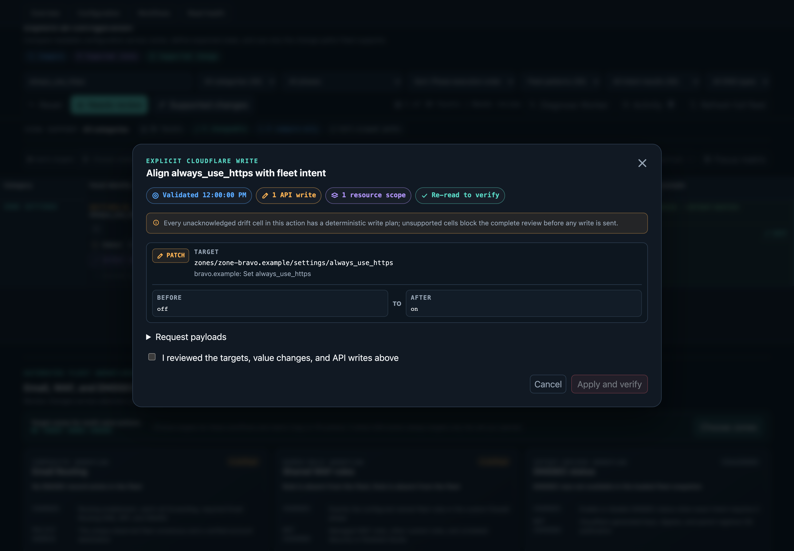
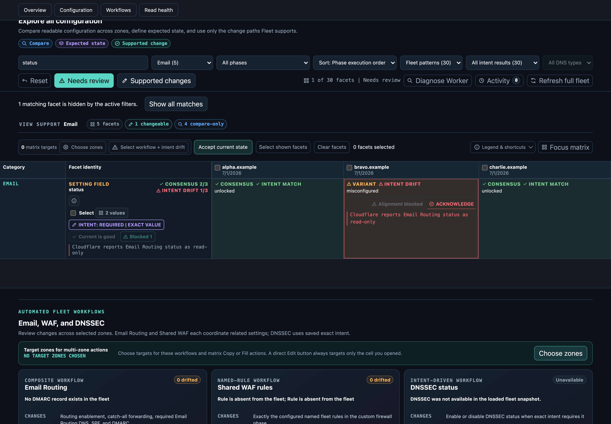
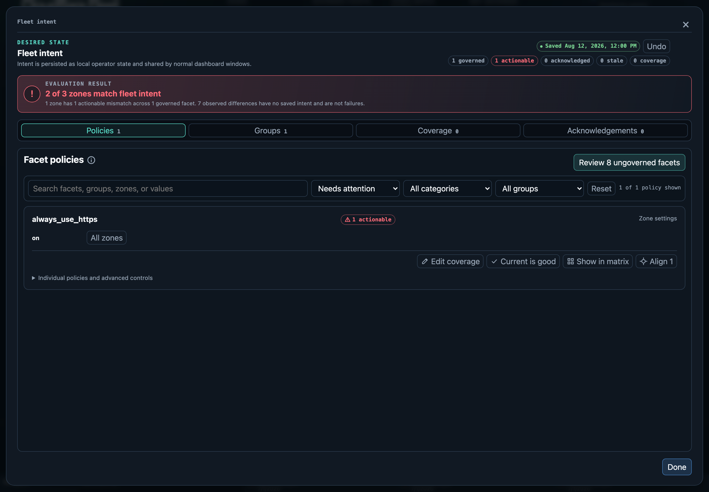
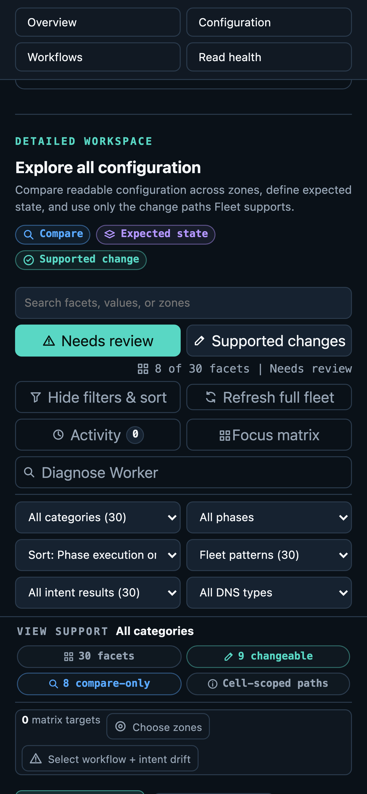

01 / COMPARE
Normalize the fleet
Cloudflare resource shapes become stable facets with explicit identity and equality rules, so genuine differences stand apart from server metadata.
Self-hosted Cloudflare operations
Cloudflare Fleet turns configuration from many zones into one comparable matrix, then keeps every supported mutation behind a fresh read, an exact plan, human confirmation, and scoped verification.
One operational workspace
Fleet opens with a decision-oriented review surface, then lets operators move from differences to expected state and finally to supported change paths.

.example namespace; no live account data is present.Designed for careful operators
01 / COMPARE
Cloudflare resource shapes become stable facets with explicit identity and equality rules, so genuine differences stand apart from server metadata.
02 / GOVERN
Presence and value intent compose across all zones and fixed scopes. Exact acknowledgements stay tied to one observed value, while supported drift exposes a direct alignment review.
03 / CHANGE
Cell, row, policy, and workflow changes reread their dependencies, produce endpoint-specific plans, save a pending journal entry, execute in order, and verify the smallest authoritative surface.
04 / ASSIST
The installed CLI and local stdio MCP server expose redacted first-run diagnosis, audit, complete intent persistence, intent alignment, bounded direct changes, activity, and guarded undo through exact plan digests, fresh replanning, and confirmation-gated writes instead of a raw API passthrough.
From intent to action
Exact and forbidden intent can produce first-class alignment actions on a policy, matrix row, or individual drifting cell. Supported adapters include zone settings, Email Routing subaddressing and wizard preferences, DNS, DNSSEC, API-managed routes, redirects, and rules. Fleet refreshes the latest intent and the relevant facet across the account, then blocks the whole selected scope if any drift cell is conflicting, ambiguous, or unsupported.


Deploy it your way
The browser application is shared. Run it behind Cloudflare Access and a Worker for durable anywhere access, or launch it through an ephemeral loopback broker on macOS. Credentials stay in the backend either way.

The complete operating model
CLOUDFLARE WORKER
LOCAL LOOPBACK
Desktop depth, mobile reach
Intent management remains a focused workspace, while narrow screens expose the complete filter model without shrinking the configuration matrix into an unreadable card list.


Start safely
The local dashboard and generated hosted configuration both default to read-only.